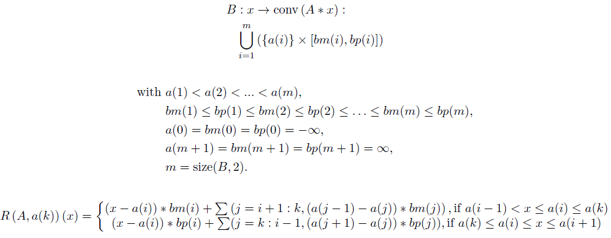

Compute the PLQ Rockafellar function R(A,a(k)) of an operator A.
R = plq_rock(B, k)
matrix. A matrix [a;bm;bp] where a, bm (b-), and bp (b+) are row vectors as defined below.
integer. 1<=k<=m. The index of the a values for which to compute R(A,a(k)). i<=k use bm, i>=k use bp.
matrix. Computed matrix of Rockfellar function R(A,a(k)) of an operator A
Compute the PLQ Rockafellar function R(A,a(k)) of an operator A, where B is defined below. This function runs in linear time, computing a PLQ piece for each i=1:m+1 where a(i-1) < x <= a(i).

a = 1:5; bm = [-10,-4, 1, 2, 5]; bp = [- 5, 0, 2, 4, 7]; B = [a;bm;bp]; plq_rock(B, 1), plq_rock(B, 5), |
Bryan Gardiner, University of British Columbia, BC, Canada